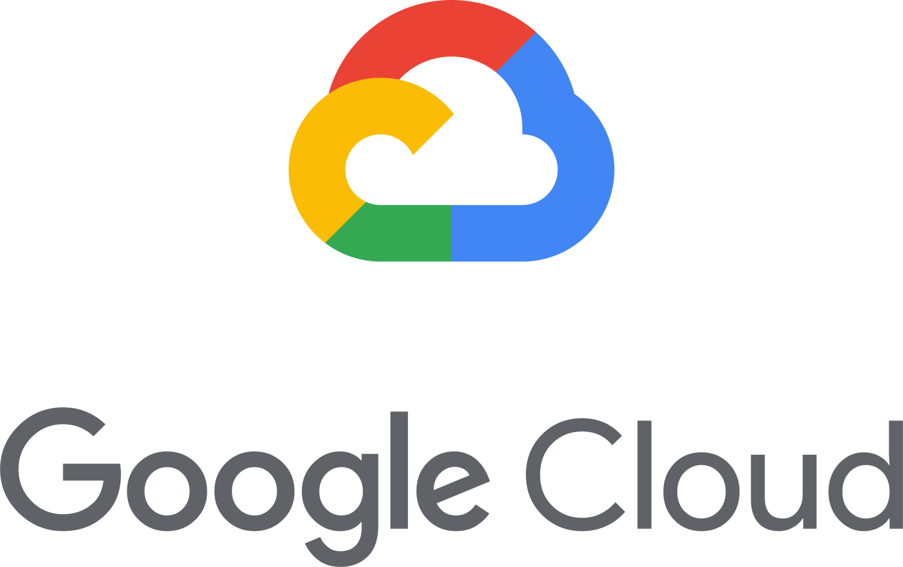

<div class="pages">
  <div data-page="projects" class="page no-toolbar no-navbar">
    <div class="page-content">
      <div class="navbarpages">
        <div class="nav_left_logo"><a href="index.html"></a></div>
        <div class="nav_right_button"><a href="menu.html"></a></div>
      </div>
      <div id="pages_maincontent">
        <h2 class="page_title">Hack Challenges</h2>
        <div class="page_content">
			<p>At the heart of Reboot is our Hackathon, where up to 180 people will compete to design a solution to one of two challenges.
Competing teams will work together as a team of up to six, and use the latest technology to provide a solution to one of our hack challenges. Teams will have access to the Google Cloud Platform (GCP), provided by Google.
Teams will be shortlisted and assessed on several criteria, including how well they have addressed the challenges and their use of technology.
</p>
			<p align="center"></p>
			<p>	The two challenges are: </p> 
          <div class="buttons-row"> <a href="#tab1" class="tab-link active button">Challenge 1</a> <a href="#tab2" class="tab-link button">Challenge 2</a> </div>
          <div class="tabs-animated-wrap">
            <div class="tabs">
              <div id="tab1" class="tab active">
                <h4>Colleague Onboarding</h4>
                <h4>How can we use technology to transform the onboarding experience for new-to-bank colleagues, allowing them to be productive from day one?</h4>
                <p>People Platform Challenge – Claire Sherwin (Business Platform Lead) & Stuart Martin (Colleague Success Director)</p>
                <p> External benchmarking of our onboarding has told is that we have a big gap in our orchestration of the end-to-end experience. Create a technology solution to transform the onboarding experience for new employees, providing them with an interactive, engaging, and informative experience from job offer, to joining and into their first days in the bank. The solution should allow new joiners to become productive as quickly as possible and create an engaging and memorable experience as they begin their careers with Lloyds Banking Group. 
                  The solution could also provide real-time feedback to the employee, line manager and business teams on different onboarding activities, allowing everyone involved in the process to stay informed on progress, upcoming actions, and completion of onboarding tasks. </p>
				  
		       </div>
              <div id="tab2" class="tab">
                <h4>Trusted Access</h4>
                <h4>How can customers grant access to their financial activities and goals to those they trust?</h4>
			    <p>Nicola Littlejohn - Retain Segment Director | Customer Propositions</p>
                <p> Through our online services we want to help our customers with their financial activities and goals by allowing them to grant access to their products to trusted family and friends. Assigning flexible permissions might involve giving a family member view-only access to an account balance, access to pay a specific bill, or perhaps manage an account entirely. Access could be granted on a permanent basis or for a fixed period. It could also allow customers to specify the guard-rails they want to put in place around access to their finances. 
Digital exclusion is an issue, with those affected being around £800 p.a. worse off. ‘Trusted access’ could allow nervous digital adopters to extend permissions to a family member who can help, allowing them to take advantage of online services and products previously unavailable to them. 
Trusted access can also provide the opportunity for customers to share their financial goals with their nearest and dearest, whether that is going to university, saving for a first home or getting married. It can allow families to support each other in ways that might be difficult otherwise, e.g. parents who are not on good terms can have transparency over finances and contribute without awkward conversations.
 </p>
                <p></p>
              </div>
            </div>
          </div>
        </div>
      </div>
    </div>
  </div>
</div>
